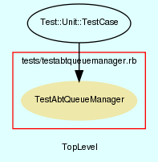

|  |
TestAbtQueueManager.rb
Unit testing for AbtQueueManager class.
Created by Eric D. Schabell <erics@abtlinux.org> Copyright 2006, GPL.
This file is part of AbTLinux.
AbTLinux is free software; you can redistribute it and/or modify it under the terms of the GNU General Public License as published by the Free Software Foundation; either version 2 of the License, or (at your option) any later version.
AbTLinux is distributed in the hope that it will be useful, but WITHOUT ANY WARRANTY; without even the implied warranty of MERCHANTABILITY or FITNESS FOR A PARTICULAR PURPOSE. See the GNU General Public License for more details.
You should have received a copy of the GNU General Public License along with AbTLinux; if not, write to the Free Software Foundation, Inc., 51 Franklin St, Fifth Floor, Boston, MA 02110-1301 USA
setup method for testing AbtQueueManager.
[ show source ]
# File TestAbtQueueManager.rb, line 38
38: def setup
39: @queue = AbtQueueManager.new()
40: end
teardown method to cleanup after testing.
[ show source ]
# File TestAbtQueueManager.rb, line 45
45: def teardown
46: end
Test method for ‘AbtQueueManager.actionPackageQueue()’
[ show source ]
# File TestAbtQueueManager.rb, line 51
51: def testActionPackageQueue
52: assert( @queue.actionPackageQueue( "ipc", "install", "add" ),
53: "testQueueManager()" )
54: end